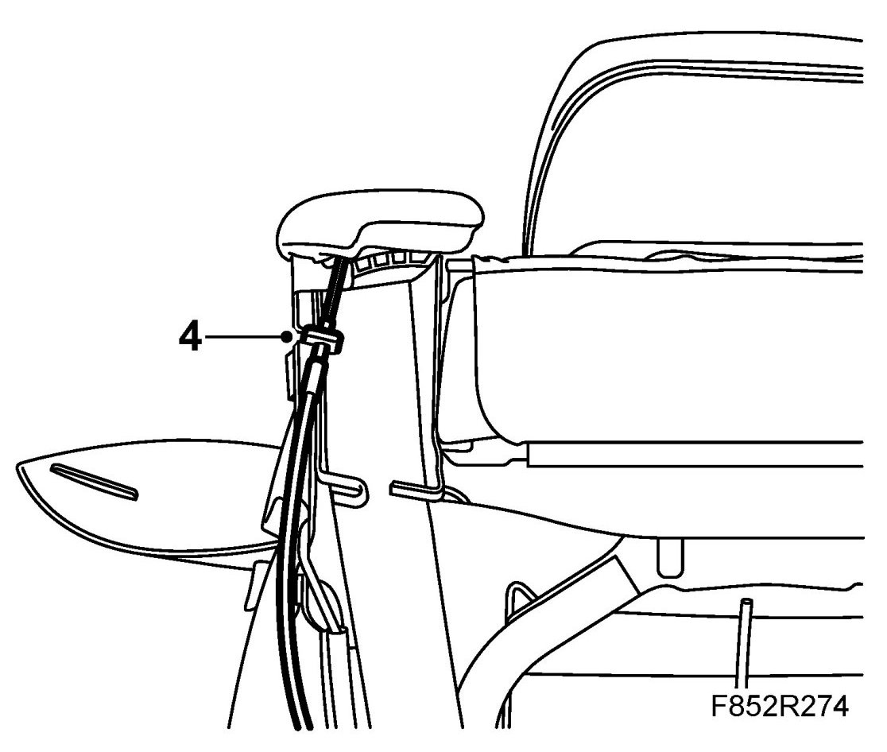
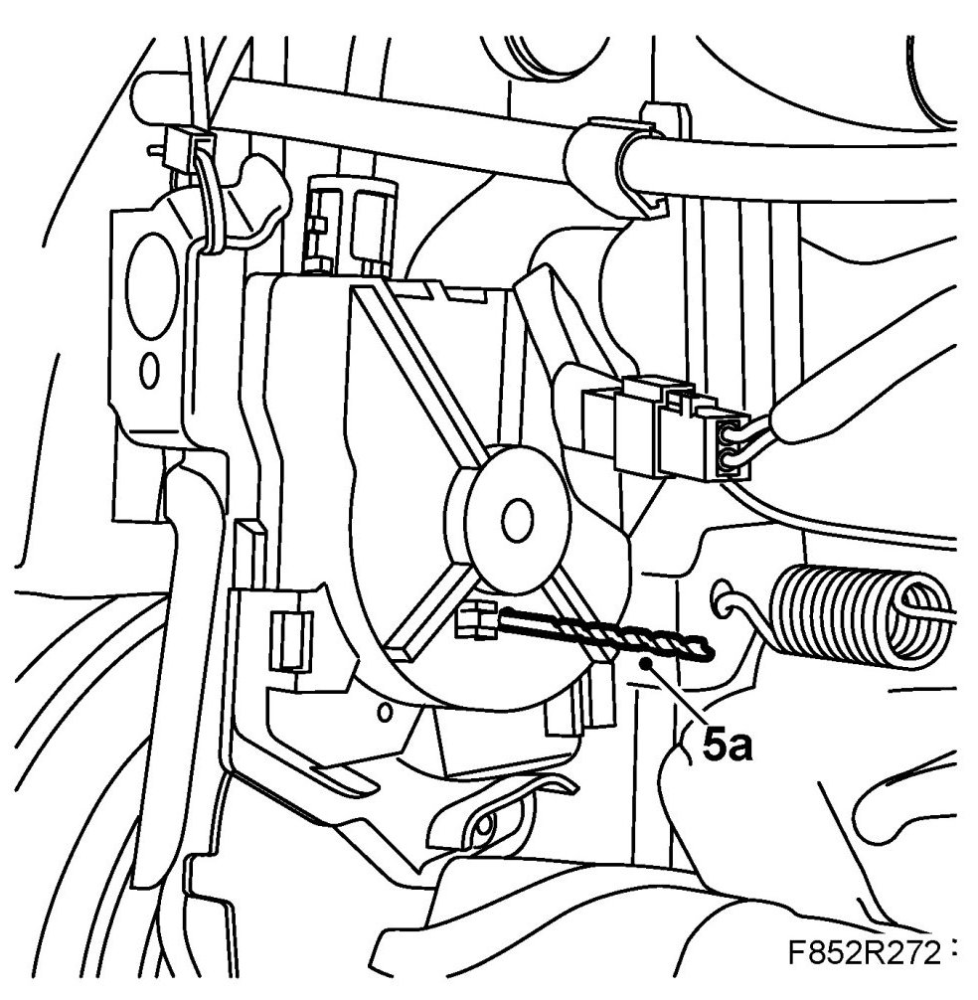
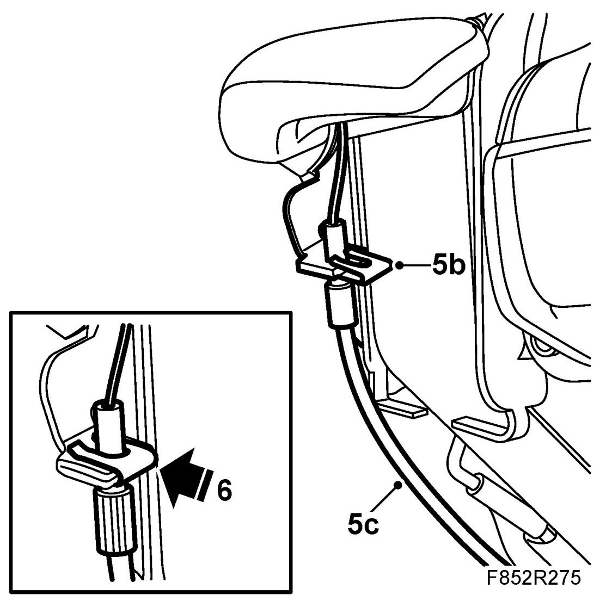

Seats: Adjustments
Adjustment Of Cable With Microswitch For Folding Forward Backrest, CV
To remove
1. Raise the seat and fold the backrest forward.
2. Remove Front seat backrest cover, CV.
3. Reposition the backrest. Make sure it locks in position.
4. Remove the lock clip.
NOTE: The unit must be locked when adjusting with a pin, drill bit or similar with a diameter of 2.5 mm inserted through the hole in the casing and through the mechanism. The lock pin cannot be inserted if the seat is folded forward.

5. Adjust the tension of the cable as follows.
IMPORTANT: The seat restraint should be upright in the locked position.
5.a. Lock the unit with a lock pin, drill or similar with a diameter of 2.5 mm.
NOTE: If the lock pin cannot be fitted, undo the unit bolt slightly and turn the unit so that the lock pin fits into the hole. Tighten the bolt.

5.b. Place the locking clip so that it sits firmly on the console but does not lock the wire sheath.

5.c. Pull the wire sheath down so that the wire is tensioned and there is no play in the control arm.
6. Press the locking clip in place.
7. Remove the lock pin.
IMPORTANT: Never lower the backrest with the lock pin attached.
8. Check the function of the backrest by folding it and restoring it to an upright position.
Make sure the backrest is locked in position. Check that there is some clearance (5-8 degrees) in the control arm.
IMPORTANT: The seat restraint should be upright in the locked position.
9. Check that the unit is adjusted correctly by inserting the lock pin into the hole in the control unit. Remove the lock pin.
10. Fit Front seat backrest cover, CV.